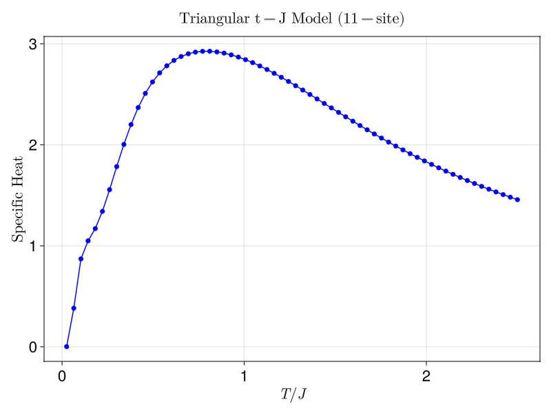

Specific Heat of the Triangular Lattice t-J Model
Author Aritra Sinha
We perform exact diagonalization (ED) to calculate the specific heat \(C\) of the triangular lattice t-J model, defined by the Hamiltonian:
where \(P\) is the projection operator onto the space of non-doubly occupied sites, \(c^\dagger_{i\sigma}\) creates an electron at site \(i\) with spin \(\sigma\), and the spin operators are defined as \(\boldsymbol{S}_i=\frac{1}{2} c^\dagger_{i\alpha}\boldsymbol{\sigma}_{\alpha\beta}c_{i\beta}\). The sums \(\langle i,j \rangle\) run over nearest-neighbor bonds on a triangular lattice. This model has been studied extensively due to its relevance for correlated electron systems and frustrated magnetism, particularly in the context of triangular lattice compounds and high-temperature superconductors [1].
Lattice Geometry
In this example, we consider an 11-site triangular lattice (arranged in a 4-4-3 geometry) with one hole in the system. The number of electrons is thus \(N_{\text{sites}} - 1\) (with equal numbers of spin-up and spin-down electrons).
Simulation Overview
- Model Parameters:
- Hopping parameter: \(t = 1.0\)
- Spin interaction parameter: \(J = 0.4\)
- System Parameters:
- Total lattice sites: \(N_{\text{sites}} = 11\)
- Electrons: 10 (5 spin‑up, 5 spin‑down)
- Specific Heat Calculation:
For a given temperature \(T\), we compute the Boltzmann weights $$ w_i = \exp\left(-\frac{E_i}{T}\right), $$ where the eigenvalues \(\{E_i\}\) are obtained from exact diagonalization of the t‑J Hamiltonian. The partition function is $$ Z = \sum_i w_i, $$ and the average energy is given by $$ \langle E \rangle = \frac{1}{Z}\sum_i E_i\,w_i. $$ The specific heat is then calculated using the relation $$ C(T) = \frac{1}{T^2}\left(\frac{1}{Z}\sum_i E_i^2\,w_i - \langle E \rangle^2\right). $$
The figure below shows the specific heat as a function of \(T/J\):

Code
using XDiag # Package for exact diagonalization
using LinearAlgebra # Standard library for linear algebra operations
using GLMakie # Package for interactive plotting
using LaTeXStrings # Package for LaTeX formatted strings in plots
function main()
# Model parameters
Nsites = 11 # Total number of lattice sites
electrons = Nsites - 1 # Number of electrons (one hole in the system)
nup = electrons ÷ 2 # Number of spin-up electrons
ndn = electrons - nup # Number of spin-down electrons
println("Triangular t-J Model: Nsites=$Nsites, nup=$nup, ndn=$ndn (holes=$(Nsites-electrons))")
# Define nearest-neighbor bonds for the 11-site triangular lattice (3-4-4 geometry)
bonds = [
(1, 2), (2, 3),
(1, 4), (1, 5), (2, 5), (2, 6), (3, 6), (3, 7),
(4, 5), (5, 6), (6, 7),
(4, 8), (5, 8), (5, 9), (6, 9), (6, 10), (7, 10), (7, 11),
(8, 9), (9, 10), (10, 11)
]
# Build the Hamiltonian using the t-J model parameters
t = 1.0 # Hopping parameter
J = 0.4 # Interaction parameter
H = OpSum()
for (i, j) in bonds
H += J * Op("SdotS", [i, j]) + t * Op("Hop", [i, j])
end
# Define the block structure for the Hamiltonian with+out any symmetry
block = tJ(Nsites, nup, ndn)
Hmat = matrix(H, block)
# Perform ED
evals = eigvals(Hermitian(Hmat))
# Define temperature range
Temp = LinRange(0.01, 1.0, 64)
C = zeros(Float64, length(Temp))
# Calculate specific heat at each temperature
for (idx, T) in enumerate(Temp)
w = exp.(-evals ./ T) # Boltzmann factors
Z = sum(w) # Partition function
E = sum(evals .* w) / Z # Average energy
C[idx] = (sum(evals.^2 .* w) / Z - E^2) / T^2 # Specific heat
end
# Create the figure
fig = Figure(size = (800, 600))
ax = Axis(fig[1, 1],
xlabel = L"T/J",
ylabel = L"\text{Specific Heat}",
title = L"\text{Triangular t-J Model (11-site)}",
xticklabelsize = 22,
yticklabelsize = 22,
xlabelsize = 22,
ylabelsize = 22,
titlegap = 14,
titlesize = 22
)
# Plot
scatterlines!(ax, Temp ./ J, C, markersize = 10, color = :blue)
# Save the figure
save("specific_heat_tJ_triangular.png", fig)
end
main()
References
[1]
J. O. Haerter, M. R. Peterson, and B. S. Shastry, Finite temperature properties of the triangular lattice t-J model, PRB 74, 245118 (2006).